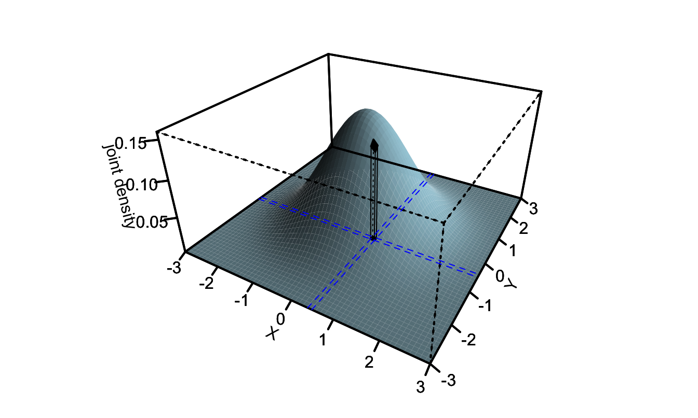
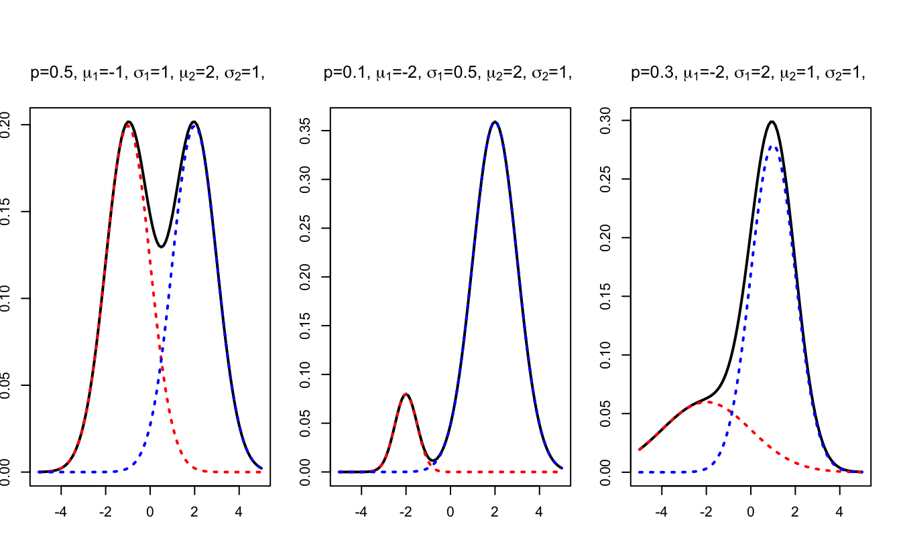

Chapter 1 Basic statistical results
How can we combine information about different groups, update a probability after observing a signal, or judge the quality of an estimator? These questions recur throughout econometrics. This chapter develops the probability tools needed to answer them.
Prerequisites. Basic probability, differentiation, and integration. For a Bernoulli variable with success probability \(p\), recall that the mean is \(p\) and the variance is \(p(1-p)\).
After working through this chapter, you should be able to:
- Move between joint, marginal, and conditional probabilities.
- Use densities and distribution functions to calculate probabilities.
- Apply iterated expectations and decompose variance into within-group and between-group components.
- Distinguish bias, variance, mean squared error, and consistency.
The exercises in Section 1.6 develop these skills through calculations, proofs, and statements to assess. Each exercise links back to the relevant section.
1.1 Expectations, covariance, and conditional probabilities
For random variables with finite second moments, \[ \operatorname{Var}(X)=\mathbb{E}[(X-\mathbb{E}(X))^2],\qquad \operatorname{Cov}(X,Y)=\mathbb{E}[(X-\mathbb{E}(X))(Y-\mathbb{E}(Y))]. \] Expectation is linear: \(\mathbb{E}(a+bX+cY)=a+b\mathbb{E}(X)+c\mathbb{E}(Y)\) for constants \(a,b,c\). Independence is not required. If \(X\) and \(Y\) are independent, their covariance is zero; the converse does not hold in general.
For discrete random variables, marginal probabilities are obtained by summing joint probabilities. For example, \[ \mathbb{P}(X=x)=\sum_y\mathbb{P}(X=x,Y=y). \] Independence means \(\mathbb{P}(X=x,Y=y)=\mathbb{P}(X=x)\mathbb{P}(Y=y)\) for every pair of possible values.
Practice: Exercise 1.1 develops two useful covariance identities.
1.1.1 Bayes’ rule
For events \(A\) and \(C\) with \(\mathbb{P}(C)>0\), \[ \mathbb{P}(A\mid C)=\frac{\mathbb{P}(A\cap C)}{\mathbb{P}(C)}. \] If \(0<\mathbb{P}(A)<1\), splitting the population into \(A\) and its complement \(A^c\) yields \[ \mathbb{P}(A\mid C)= \frac{\mathbb{P}(C\mid A)\mathbb{P}(A)} {\mathbb{P}(C\mid A)\mathbb{P}(A)+\mathbb{P}(C\mid A^c)\mathbb{P}(A^c)}. \] The distinction between \(\mathbb{P}(C\mid A)\) and \(\mathbb{P}(A\mid C)\) is essential: the accuracy of a signal does not by itself tell us the probability of an underlying event after observing that signal.
1.2 Cumulative distribution and probability density functions
Definition 1.1 (Cumulative distribution function (c.d.f.)) The random variable (r.v.) \(X\) admits the cumulative distribution function \(F\) if, for all \(a\): \[ F(a)=\mathbb{P}(X \le a). \]
Definition 1.2 (Probability density function (p.d.f.)) A continuous random variable \(X\) admits the probability density function \(f\) if, for all \(a\) and \(b\) such that \(a<b\): \[ \mathbb{P}(a < X \le b) = \int_{a}^{b}f(x)dx, \] where \(f(x) \ge 0\) for all \(x\).
In particular, we have: \[\begin{equation} f(x) = \lim_{\varepsilon \rightarrow 0} \frac{\mathbb{P}(x < X \le x + \varepsilon)}{\varepsilon} = \lim_{\varepsilon \rightarrow 0} \frac{F(x + \varepsilon)-F(x)}{\varepsilon}.\tag{1.1} \end{equation}\] and \[ F(a) = \int_{-\infty}^{a}f(x)dx. \] This web interface illustrates the link between p.d.f. and c.d.f. Nonparametric estimates of p.d.f. are obtained by kernel-based methods (see this extra material).
Definition 1.3 (Joint cumulative distribution function (c.d.f.)) The random variables \(X\) and \(Y\) admit the joint cumulative distribution function \(F_{XY}\) if, for all \(a\) and \(b\): \[ F_{XY}(a,b)=\mathbb{P}(X \le a,Y \le b). \]

Figure 1.1: The volume between the horizontal plane (\(z=0\)) and the surface is equal to \(F_{XY}(0.5,1)=\mathbb{P}(X<0.5,Y<1)\).
Definition 1.4 (Joint probability density function (p.d.f.)) The continuous random variables \(X\) and \(Y\) admit the joint p.d.f. \(f_{XY}\), where \(f_{XY}(x,y) \ge 0\) for all \(x\) and \(y\), if: \[ \mathbb{P}(a < X \le b,c < Y \le d) = \int_{a}^{b}\int_{c}^{d}f_{XY}(x,y)dy dx, \quad \forall a \le b,\;c \le d. \]
In particular, we have: \[\begin{eqnarray*} &&f_{XY}(x,y)\\ &=& \lim_{\varepsilon \rightarrow 0} \frac{\mathbb{P}(x < X \le x + \varepsilon,y < Y \le y + \varepsilon)}{\varepsilon^2} \\ &=& \lim_{\varepsilon \rightarrow 0} \frac{F_{XY}(x + \varepsilon,y + \varepsilon)-F_{XY}(x,y + \varepsilon)-F_{XY}(x + \varepsilon,y)+F_{XY}(x,y)}{\varepsilon^2}. \end{eqnarray*}\]

Figure 1.2: Assume that the basis of the black column is defined by those points whose \(x\)-coordinates are between \(x\) and \(x+\varepsilon\) and \(y\)-coordinates are between \(y\) and \(y+\varepsilon\). Then the volume of the black column is equal to \(\mathbb{P}(x < X \le x+\varepsilon,y < Y \le y+\varepsilon)\), which is approximately equal to \(f_{XY}(x,y)\varepsilon^2\) if \(\varepsilon\) is small.
Figure 1.3 illustrates why we have \[\begin{eqnarray*} &&\mathbb{P}(x < X \le x + \varepsilon,y < Y \le y + \varepsilon)\\ &=& F_{XY}(x + \varepsilon,y + \varepsilon)-F_{XY}(x,y + \varepsilon)-F_{XY}(x + \varepsilon,y)+F_{XY}(x,y). \end{eqnarray*}\] Let us denote by \(P_\Omega\) the probability that the point of coordinate \((X,Y)\) is included in the \(\Omega\) area. We have: \[ P_{B} = P_{B+C+D+E} - P_{E+D} - P_{E+C} + P_E, \] which implies that \[\begin{eqnarray*} &&\mathbb{P}(x<X\le x+ \varepsilon,y<Y\le y+ \varepsilon) \\ &=& \mathbb{P}(X\le x+ \varepsilon,Y\le y+ \varepsilon) - \mathbb{P}(X\le x+ \varepsilon,Y\le y) - \mathbb{P}(X\le x,Y\le y+ \varepsilon)\\ &&+ \mathbb{P}(X\le x,Y\le y). \end{eqnarray*}\]

Figure 1.3: Area \(B+C+D+E\) encompasses the points with coordinates \((X,Y)\) such that \(X\le x+\varepsilon\) and \(Y \le y + \varepsilon\). Area \(D+E\) encompasses the points with coordinates \((X,Y)\) such that \(X\le x+\varepsilon\) and \(Y \le y\). Area \(C+E\) encompasses the points with coordinates \((X,Y)\) such that \(X\le x\) and \(Y \le y + \varepsilon\).
Definition 1.5 (Conditional probability distribution function) If \(X\) and \(Y\) are continuous r.v., then the distribution of \(X\) conditional on \(Y=y\), which we denote by \(f_{X|Y}(x,y)\), satisfies: \[ f_{X|Y}(x,y)=\lim_{\varepsilon \rightarrow 0} \frac{\mathbb{P}(x < X \le x + \varepsilon|Y=y)}{\varepsilon}. \]
Proposition 1.1 (Conditional probability distribution function) We have \[ f_{X|Y}(x,y)=\frac{f_{XY}(x,y)}{f_Y(y)}. \]
Proof. We have: \[\begin{eqnarray*} f_{X|Y}(x,y)&=&\lim_{\varepsilon \rightarrow 0} \frac{\mathbb{P}(x < X \le x + \varepsilon|Y=y)}{\varepsilon}\\ &=&\lim_{\varepsilon \rightarrow 0} \frac{1}{\varepsilon}\mathbb{P}(x < X \le x + \varepsilon|y<Y\le y+\varepsilon)\\ &=&\lim_{\varepsilon \rightarrow 0} \frac{1}{\varepsilon}\frac{\mathbb{P}(x < X \le x + \varepsilon,y<Y\le y+\varepsilon)}{\mathbb{P}(y<Y\le y+\varepsilon)}\\ &=&\lim_{\varepsilon \rightarrow 0} \frac{1}{\varepsilon} \frac{\varepsilon^2f_{XY}(x,y)}{\varepsilon f_{Y}(y)}. \end{eqnarray*}\]
Definition 1.6 (Independent random variables) Consider two r.v., \(X\) and \(Y\), with respective c.d.f. \(F_X\) and \(F_Y\), and respective p.d.f. \(f_X\) and \(f_Y\).
These random variables are independent if and only if (iff) the joint c.d.f. of \(X\) and \(Y\) (see Def. 1.3) is given by: \[ F_{XY}(x,y) = F_{X}(x) \times F_{Y}(y), \] or, equivalently, iff the joint p.d.f. of \((X,Y)\) (see Def. 1.4) is given by: \[ f_{XY}(x,y) = f_{X}(x) \times f_{Y}(y). \]
We have the following:
- If \(X\) and \(Y\) are independent, \(f_{X|Y}(x,y)=f_{X}(x)\). This implies, in particular, that \(\mathbb{E}(g(X)|Y)=\mathbb{E}(g(X))\), where \(g\) is any function.
- If \(X\) and \(Y\) are independent, then \(\mathbb{E}(g(X)h(Y))=\mathbb{E}(g(X))\mathbb{E}(h(Y))\) and \(\mathbb{C}ov(g(X),h(Y))=0\), where \(g\) and \(h\) are any functions.
It is important to note that the absence of correlation between two variables is not a sufficient condition to have independence. Consider for instance the case where \(X=Y^2\), with \(Y \sim\mathcal{N}(0,1)\). In this case, we have \(\mathbb{C}ov(X,Y)=0\), but \(X\) and \(Y\) are not independent. Indeed, we have for instance \(\mathbb{E}(Y^2 \times X)=3\), which is not equal to \(\mathbb{E}(Y^2) \times \mathbb{E}(X)=1\). (If \(X\) and \(Y\) were independent, we should have \(\mathbb{E}(Y^2 \times X)=\mathbb{E}(Y^2) \times \mathbb{E}(X)\) according to point 2 above.)
Practice: Exercise 1.4 asks how a density changes after conditioning above a quantile.
1.3 Law of iterated expectations
Proposition 1.2 (Law of iterated expectations) If \(X\) and \(Y\) are two random variables and if \(\mathbb{E}(|X|)<\infty\), we have: \[ \boxed{\mathbb{E}(X) = \mathbb{E}(\mathbb{E}(X|Y)).} \]
Proof. (in the case where the p.d.f. of \((X,Y)\) exists) Let us denote by \(f_X\), \(f_Y\) and \(f_{XY}\) the probability distribution functions (p.d.f.) of \(X\), \(Y\) and \((X,Y)\), respectively. We have: \[ f_{X}(x) = \int f_{XY}(x,y) dy. \] Besides, we have (Bayes equality, Prop. 1.1): \[ f_{XY}(x,y) = f_{X|Y}(x,y)f_{Y}(y). \] Therefore: \[\begin{eqnarray*} \mathbb{E}(X) &=& \int x f_X(x)dx = \int x \underbrace{ \int f_{XY}(x,y) dy}_{=f_X(x)} dx =\int \int x f_{X|Y}(x,y)f_{Y}(y) dydx \\ & = & \int \underbrace{\left(\int x f_{X|Y}(x,y)dx\right)}_{\mathbb{E}[X|Y=y]}f_{Y}(y) dy = \mathbb{E} \left( \mathbb{E}[X|Y] \right). \end{eqnarray*}\]
Example 1.1 (Mixture of Gaussian distributions) By definition, \(X\) is drawn from a mixture of Gaussian distributions if: \[ X = \color{blue}{B \times Y_1} + \color{red}{(1-B) \times Y_2}, \] where \(B\), \(Y_1\) and \(Y_2\) are three independent variables drawn as follows: \[ B \sim \mbox{Bernoulli}(p),\quad Y_1 \sim \mathcal{N}(\mu_1,\sigma_1^2), \quad \mbox{and}\quad Y_2 \sim \mathcal{N}(\mu_2,\sigma_2^2). \]
Figure 1.4 displays the pdfs associated with three different mixtures of Gaussian distributions. (This web-interface allows to produce the pdf associated for any other parameterization.)

Figure 1.4: Example of pdfs of mixtures of Gaussian distribututions.
The law of iterated expectations gives: \[ \mathbb{E}(X) = \mathbb{E}(\mathbb{E}(X|B)) = \mathbb{E}(B\mu_1+(1-B)\mu_2)=p\mu_1 + (1-p)\mu_2. \]
Example 1.2 (Buffon (1733)'s needles) Suppose we have a floor made of parallel strips of wood, each the same width [\(w=1\)]. We drop a needle, of length \(1/2\), onto the floor. What is the probability that the needle crosses the grooves of the floor?
Let’s define the random variable \(X\) by \[ X = \left\{ \begin{array}{cl} 1 & \mbox{if the needle crosses a line}\\ 0 & \mbox{otherwise.} \end{array} \right. \] Conditionally on \(\theta\), it can be seen that we have \(\mathbb{E}(X|\theta)=\cos(\theta)/2\) (see Figure 1.5).

Figure 1.5: Schematic representation of the problem.
It is reasonable to assume that \(\theta\) is uniformly distributed on \([-\pi/2,\pi/2]\), therefore: \[ \mathbb{E}(X)=\mathbb{E}(\mathbb{E}(X|\theta))=\mathbb{E}(\cos(\theta)/2)=\int_{-\pi/2}^{\pi/2}\frac{1}{2}\cos(\theta)\left(\frac{d\theta}{\pi}\right)=\frac{1}{\pi}. \]
[This web-interface allows to simulate the present experiment (select Worksheet “Buffon’s needles”).]
Practice: Exercise 1.7 distinguishes conditional and unconditional moments.
1.4 Law of total variance
Proposition 1.3 (Law of total variance) If \(X\) and \(Y\) are two random variables and if the variance of \(X\) is finite, we have: \[ \boxed{\mathbb{V}ar(X) = \mathbb{E}(\mathbb{V}ar(X|Y)) + \mathbb{V}ar(\mathbb{E}(X|Y)).} \]
Proof. We have: \[\begin{eqnarray*} \mathbb{V}ar(X) &=& \mathbb{E}(X^2) - \mathbb{E}(X)^2\\ &=& \mathbb{E}(\mathbb{E}(X^2|Y)) - \mathbb{E}(X)^2\\ &=& \mathbb{E}(\mathbb{E}(X^2|Y) \color{blue}{- \mathbb{E}(X|Y)^2}) + \color{blue}{\mathbb{E}(\mathbb{E}(X|Y)^2)} - \color{red}{\mathbb{E}(X)^2}\\ &=& \mathbb{E}(\underbrace{\mathbb{E}(X^2|Y) - \mathbb{E}(X|Y)^2}_{\mathbb{V}ar(X|Y)}) + \underbrace{\mathbb{E}(\mathbb{E}(X|Y)^2) - \color{red}{\mathbb{E}(\mathbb{E}(X|Y))^2}}_{\mathbb{V}ar(\mathbb{E}(X|Y))}. \end{eqnarray*}\]
Example 1.3 (Mixture of Gaussian distributions (cont'd)) Consider the case of a mixture of Gaussian distributions (Example 1.1). We have: \[\begin{eqnarray*} \mathbb{V}ar(X) &=& \color{blue}{\mathbb{E}(\mathbb{V}ar(X|B))} + \color{red}{\mathbb{V}ar(\mathbb{E}(X|B))}\\ &=& \color{blue}{p\sigma_1^2+(1-p)\sigma_2^2} + \color{red}{p(1-p)(\mu_1 - \mu_2)^2}. \end{eqnarray*}\]
Practice: Exercise 1.3 separates within-group and between-group variation.
1.5 Bias, accuracy, and consistency
Let \(\widehat\theta\) estimate a fixed parameter \(\theta\). Its bias is \(\mathbb{E}(\widehat\theta)-\theta\); an unbiased estimator has zero bias. When its second moment is finite, its mean squared error satisfies \[ \operatorname{MSE}(\widehat\theta)=\mathbb{E}[(\widehat\theta-\theta)^2] =\operatorname{Var}(\widehat\theta)+\operatorname{Bias}(\widehat\theta)^2. \] A small variance means the estimator is concentrated around its own mean; it does not guarantee that this mean is close to the parameter. Exercise 1.5 derives this decomposition. Consistency concerns a different question: what happens as the sample grows?
The objective of econometrics is to estimate parameters out of data observations (samples). Examples of parameters of interest include, among many others: causal effect of a variable on another, elasticities, parameters defining some distribution of interest, preference parameters (risk aversion)…
Except in degenerate cases, the estimates are different from the “true” (or population) value. A good estimator is expected to converge to the true value when the sample size increases. That is, we are interested in the consistency of the estimator.
Denote by \(\hat\theta_n\) the estimate of \(\theta\) based on a sample of length \(n\). We say that \(\hat\theta\) is a consistent estimator of \(\theta\) if, for any \(\varepsilon>0\) (even if very small), the probability that \(\hat\theta_n\) is in \([\theta - \varepsilon,\theta + \varepsilon]\) goes to 1 when \(n\) goes to \(\infty\). Formally: \[ \lim_{n \rightarrow + \infty} \mathbb{P}\left(\hat\theta_n \in [\theta - \varepsilon,\theta + \varepsilon]\right) = 1. \]
That is, \(\hat\theta\) is a consistent estimator if \(\hat\theta_n\) converges in probability (Def. 9.16) to \(\theta\). Note that there exist different types of stochastic convergence.1
Example 1.4 (Example of non-convergent estimator) Assume that \(X_i \sim i.i.d. \mbox{Cauchy}\) with a location parameter of 1 and a scale parameter of 1 (Def. 9.14). The sample mean \(\bar{X}_n = \frac{1}{n}\sum_{i=1}^{n} X_i\) does not converge in probability. This is because a Cauchy distribution has no mean; hence the law of large numbers (Theorem 2.1) does not apply.
Code

Figure 1.6: Simulation of \(\bar{X}_n\) when \(X_i \sim i.i.d. \mbox{Cauchy}\).
Chapter recap
- A conditional probability changes the information available; Bayes’ rule reverses the direction of conditioning.
- A density gives probabilities through integration, not through its value at a single point.
- Iterated expectations recover a population mean by averaging conditional means.
- Total variance adds average within-group variance and variance between group means.
- Bias and variance describe finite-sample performance; consistency describes behavior as sample size increases.
1.6 Exercises
Attempt each question before class and explain your reasoning, including for the true-or-false statements. Foundation exercises apply a result directly; Standard exercises require several steps or a short proof. Worked solutions and exercise-specific hints are reserved for teaching sessions and are not included in this student edition.
Exercise 1.1 (Covariance identities) Standard | Analytical
Review Section 1.1.
Let \(X,Y,V\) have finite second moments, and let \(a,b,c\) be constants. Write \(\mu_X=\mathbb{E}(X)\) and \(\sigma_{XY}=\operatorname{Cov}(X,Y)\).
- Show that \(\operatorname{Cov}(a+bX+cV,Y)=b\sigma_{XY}+c\sigma_{VY}\).
- Show that \(\mathbb{E}(XY)=\operatorname{Cov}(X,Y)+\mathbb{E}(X)\mathbb{E}(Y)\).
Exercise 1.2 (Bayes rule and facial recognition) Foundation | Applied calculation
Review Section 1.1.1.
A security system grants access to an authorized person with probability \(0.99\), and to an unauthorized person with probability \(0.02\). Of those attempting to enter, \(5\%\) are unauthorized.
- Given that a person is granted access, what is the probability that the person is authorized?
- Given that a person is denied access, what is the probability that the person is unauthorized?
Exercise 1.3 (Within-group and between-group variation) Foundation | Applied calculation
Review Section 1.4.
Let \(X\) be daily time spent on social media (in hours), and let \(Y\) indicate age group. The population has the following characteristics:
| Age group | Share | Mean (h) | Variance (\(\mathrm{h}^2\)) |
|---|---|---|---|
| Under 30 | 0.6 | 4 | 1.5 |
| 30 or above | 0.4 | 2 | 0.5 |
- Calculate \(\mathbb{E}[\operatorname{Var}(X\mid Y)]\).
- Calculate \(\mathbb{E}[\mathbb{E}(X\mid Y)]\).
- Calculate \(\operatorname{Var}[\mathbb{E}(X\mid Y)]\).
- Use the law of total variance to obtain \(\operatorname{Var}(X)\).
Exercise 1.4 (Conditioning above a quantile) Standard | Analytical
Review Section 1.2.
Let \(X\) have a continuous density \(f\) and cumulative distribution function \(F\). For \(0<\alpha<1\), let \(q_\alpha\) satisfy \(F(q_\alpha)=\alpha\).
- How can \(f\) be obtained from \(F\)?
- Derive the c.d.f. \(F_\alpha\) of \(X\) conditional on \(X>q_\alpha\). State its value both below and above \(q_\alpha\).
- Derive the corresponding density \(f_\alpha\).
Exercise 1.5 (Bias, variance, and mean squared error) Standard | Conceptual / analytical
Review Section 1.5.
Let \(\widehat\theta\) estimate a fixed parameter \(\theta\), and suppose \(\widehat\theta\) has a finite second moment.
- What property is expressed by \(\mathbb{E}(\widehat\theta)=\theta\)?
- Express \(\mathbb{E}[(\widehat\theta-\theta)^2]\) in terms of the variance and bias of \(\widehat\theta\).
- Does a small variance necessarily imply a small mean squared error? Explain.
Exercise 1.6 (Employment, residence, and independence) Standard | Conceptual / calculation
Review Section 1.1.1.
Let \(X\) indicate employment status (\(0\): employed; \(1\): self-employed), and let \(Y\) indicate residence (\(0\): countryside; \(1\): city). Their joint probabilities are:
| \(Y=0\) | \(Y=1\) | |
|---|---|---|
| \(X=0\) | 0.10 | 0.30 |
| \(X=1\) | 0.15 | 0.45 |
For each statement, decide whether it is true or false and justify your answer.
- \(\mathbb{E}(X)=0.7\).
- \(X\) and \(Y\) are not independent.
- \(\operatorname{Var}(X)=\operatorname{Var}(X\mid Y=0)+\operatorname{Var}(X\mid Y=1)\).
- \(\operatorname{Var}(X\mid Y=0)=0.24\).
- Bayes’ rule implies \[ \begin{gathered} \mathbb{P}(X=0\mid Y=0)\\ =\frac{\mathbb{P}(Y=0\mid X=0)\mathbb{P}(X=0)} {\mathbb{P}(Y=0\mid X=0)\mathbb{P}(X=0)+\mathbb{P}(Y=0\mid X=1)\mathbb{P}(X=1)}. \end{gathered} \]
- The correlation between \(X\) and \(Y\) is strictly positive.
Exercise 1.7 (A Bernoulli variable with a random success probability) Standard | Conceptual / analytical
Review Section 1.3.
Let \(U\) be uniform on \([0,1]\), and suppose \(Y\mid U\sim\operatorname{Bernoulli}(U)\).
For each statement, decide whether it is true or false and justify your answer.
- \(\mathbb{E}(Y\mid U)=U\).
- \(\operatorname{Var}(Y\mid U)=U^2\).
- \(\operatorname{Var}(Y)=1/4\).
- \(\mathbb{E}(Y)=1/4\).
- \(\mathbb{E}(Y+U)=2U\).